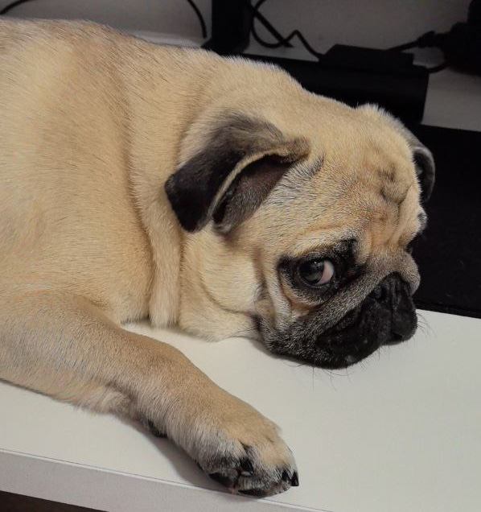

Amazing Ciri
A little pugCiri is my beloved pug. She was born on April 24, 2023. She has a light-colored coat and is incredibly kind-hearted. Ciri absolutely loves to eat, sleep, and play with me. She adores people and children, making friends wherever she goes.
My Dog
Ciri's favorite activities include munching on her favorite treats, curling up for long naps, and engaging in playful antics. Her affectionate nature and cheerful disposition make her a joy to be around. She has a special way of brightening up the day for everyone she meets.